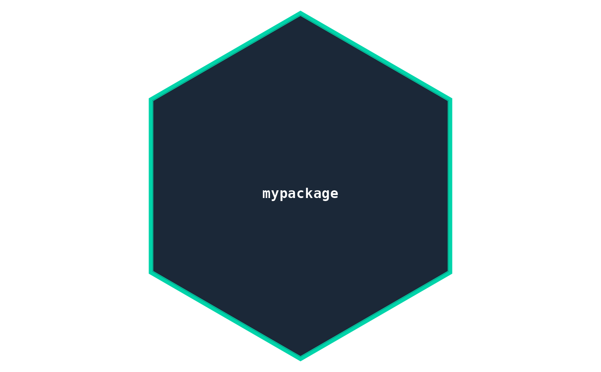
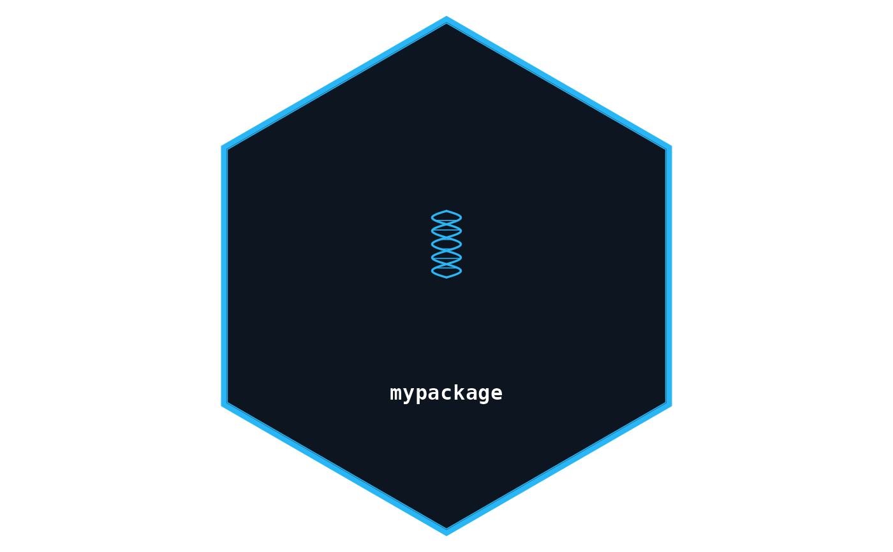

Generates a publication-ready hexagon sticker for an R package.
Returns a ggplot object that can be printed, further customised with +,
or saved with save_hex().
Usage
hex_sticker(
name = "package",
subtitle = NULL,
url = NULL,
icon = NULL,
icon_image = NULL,
icon_size = 1,
theme = "stats",
mode = "dark",
bg = NULL,
accent = NULL,
text_color = NULL,
border_color = NULL,
sub_color = NULL,
font_family = "mono",
font_bold = TRUE,
font_italic = FALSE,
font_size = 12,
border_width = 2,
inner_border = TRUE,
filename = NULL,
width = 600,
dpi = 300
)Arguments
- name
Character. The package name displayed on the sticker.
- subtitle
Character or
NULL. Optional subtitle shown below the package name.- url
Character or
NULL. Optional URL shown near the bottom of the sticker.- icon
Character or
NULL. Name of a built-in icon. Seehexmakr_icons()for valid values. Ignored ificon_imageis provided.- icon_image
Character or
NULL. Path to a custom image file (PNG or JPEG). If provided, overridesicon.- icon_size
Numeric. Size multiplier for the icon (default
1.0).- theme
Character. Theme name. One of
names(hexmakr_themes()). Default"stats".- mode
Character. Color mode, either
"dark"(default) or"light".- bg
Character or
NULL. Override the background color (hex string, e.g."#1B2838").- accent
Character or
NULL. Override the accent color.- text_color
Character or
NULL. Override the text color.- border_color
Character or
NULL. Override the border color.- sub_color
Character or
NULL. Override the subtitle/URL color.- font_family
Character. Font shorthand (e.g.
"mono","serif","sans") or a system font name. Default"mono".- font_bold
Logical. Use bold weight. Default
TRUE.- font_italic
Logical. Use italic style. Default
FALSE.- font_size
Numeric. Base font size in pt for the package name. Default
12.- border_width
Numeric. Border line width in mm. Default
2.- inner_border
Logical. Draw a thin inner accent ring. Default
TRUE.- filename
Character or
NULL. If provided, save the sticker as a transparent PNG at this path usingsave_hex().- width
Integer. Export width in pixels (height is derived from the hex aspect ratio). Default
600.- dpi
Numeric. Resolution for PNG export. Default
300.
See also
hexmakr_themes(), hexmakr_icons(), save_hex(),
hexmakr_app()
Other stickers:
hexmakr_app(),
save_hex(),
save_hex_svg()
Examples
# \donttest{
# Minimal sticker
hex_sticker("mypackage")

# With icon and theme
hex_sticker("mypackage", icon = "dna", theme = "genomics")

# Save to file
tmp <- tempfile(fileext = ".png")
hex_sticker("mypackage", icon = "atom", theme = "stats", filename = tmp)
file.exists(tmp)
#> [1] TRUE
# }